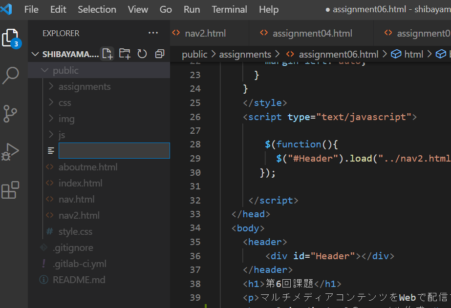
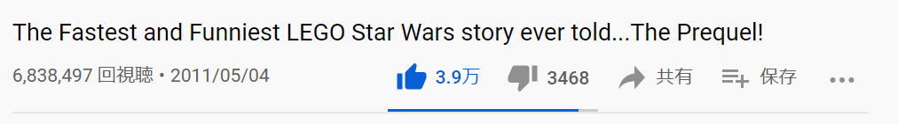
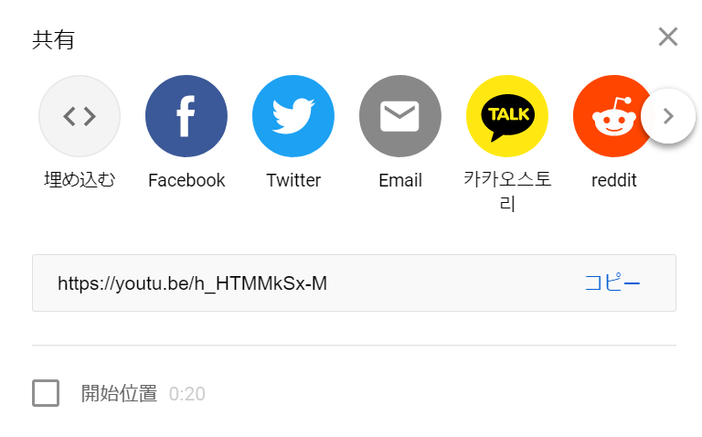
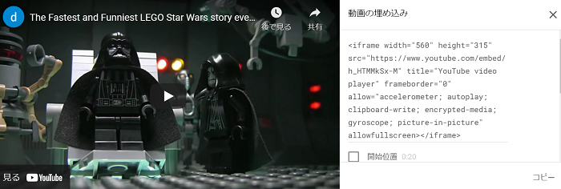
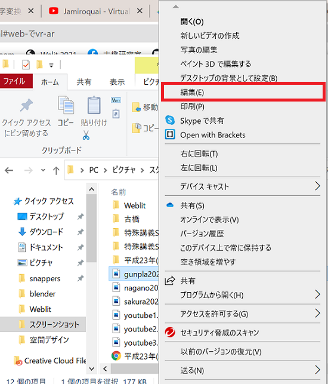
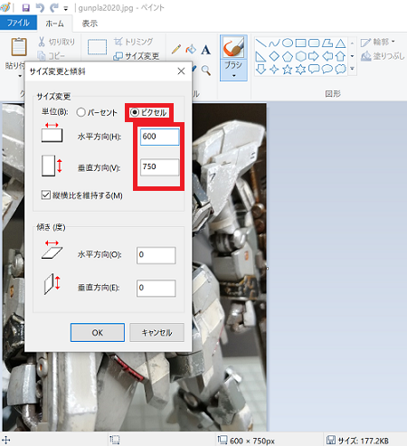

第6回課題
マルチメディアコンテンツをWebで配信する
multimedia.htmlのファイル作成
- "New file"で"muttimedia.html"を新規作成する。

- DOCTYPE宣言をして、headタグをコピペする。titleを"マルチメディアコンテンツ"に変更する。
- nav.htmlにmultimedia.htmlへのリンクを加え、ヘッダーに表示できるようにする。
<ul class="uk-navbar-nav">
<li><a href="./index.html">HOME</a></li>
<li class="uk-active"><a href="./aboutme.html">AboutMe</a></li>
<li class="uk-active"><a href="./multimadia.html">Multimedia</a></li>
埋め込みタグを利用した動画の貼り付け
- 動画サイトの"共有"ボタンから"埋め込む"を選択して埋め込みタグをコピーする。



- multimedia.htmlのbodyにペーストする。
- 動画の次の行に紹介文を添える。
撮影した写真の貼り付け
- ドライブにアップロードされているスマホの画像をPCにダウンロードし、右クリック→"編集"でペイントを開きトリミングとサイズダウンをする。

- サイズ変更でピクセル数を調節する。

- publicフォルダ内のimgフォルダにコピーする。※最初は誤ってassignmentsフォルダ内のimgフォルダにコピーしてしまったため、webで表示できていなかった。相対パスのルールと、エディターのフォルダの構成を見直して修正した。
- imgタグを利用してmultimedia.htmlに画像を貼り付けする。
<img data-src="./img/gunpla2020.jpg" width="70%" uk-img>
画像の次の行に紹介文を添える。